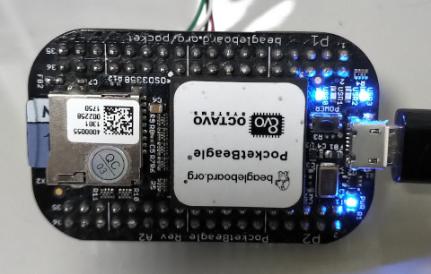

Linux Device Driver >> Assembly (ARM)
gpio output
參考資訊：
1. Source Code
PocketBeagle開發板上有四顆USR LED，位置如下：

Device Tree
led@5 {
label = "beaglebone:green:usr3";
gpios = <&gpio1 24 GPIO_ACTIVE_HIGH>
linux,default-trigger = "mmc1";
default-state = "off";
};
P.S. USR3位置是GPIO1-24
Linux Kernel提供一系列GPIO操作函數，使用步驟如下：
1. gpio_request()
2. gpio_to_desc()
3. gpiod_direction_output_raw()
4. gpiod_set_raw_value()
5. gpio_free()
驅動程式位於硬體與軟體的中介層，因此，使用者也可以使用單晶片的寫法去驅動GPIO，而此種方式就需要針對Register操作，目前司徒使用Linux Kernel提供的GPIO函數操作
ldd.S
.global init_module
.global cleanup_module
.extern printk
.extern msleep
.extern gpio_free
.extern gpio_request
.extern gpio_to_desc
.extern gpiod_set_raw_value
.extern gpiod_direction_output_raw
.equ USR3_LED, ((32 * 1) + 24)
.section .modinfo, "ae"
__UNIQUE_ID_0: .asciz "license=GPL"
.align
__UNIQUE_ID_1: .asciz "author=Steward Fu"
.align
__UNIQUE_ID_2: .asciz "description=Linux Driver"
.align
.section .text
led_name: .asciz "USR3"
.align
.section .text
init_module:
push {r4, r5, lr}
mov r0, #USR3_LED
ldr r1, =led_name
bl gpio_request
mov r0, #USR3_LED
bl gpio_to_desc
mov r5, r0
mov r0, r5
mov r1, #1
bl gpiod_direction_output_raw
mov r4, #3
loop:
mov r0, r5
mov r1, #0
bl gpiod_set_raw_value
mov r0, #1000
bl msleep
mov r0, r5
mov r1, #1
bl gpiod_set_raw_value
mov r0, #1000
bl msleep
subs r4, #1
bne loop
mov r0, #USR3_LED
bl gpio_free
mov r0, #0
pop {r4, r5, pc}
cleanup_module:
push {lr}
pop {pc}
.end
相較於C語言的封裝，從Assembly語言中就可以看出，主要的關鍵在於gpio_to_desc()取得的資料結構，每次的GPIO設定都是依據這個結構做設定
完成

